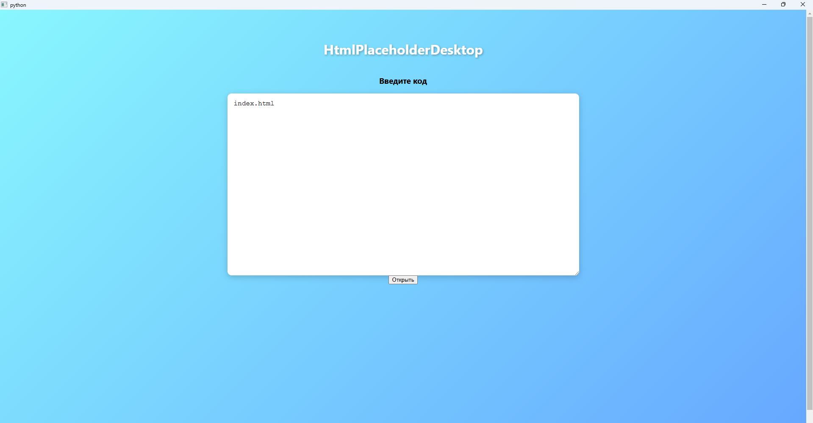

HtmlPlaceholderDesktop
HtmlPlaceholderDesktop is a simple desktop application in Python using PySide6 for rendering HTML. The program is designed for quickly previewing HTML code directly in a window.
Main Features
- Display custom HTML code in the application window.
- "Open" button to refresh the displayed HTML.
- Beautiful visual interface with gradient background and styled text and controls.
Technologies Used
- Python 3.x
- PySide6 (Qt for Python)
- Qt WebEngine for rendering HTML content
Purpose
- Quick testing of HTML files without opening a browser.
- Educational purposes — visualizing HTML.
- Prototyping simple web pages directly on the desktop.
Screenshot
